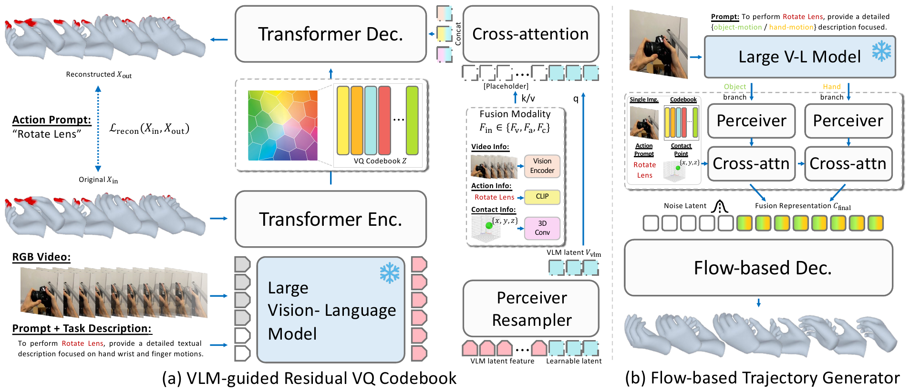
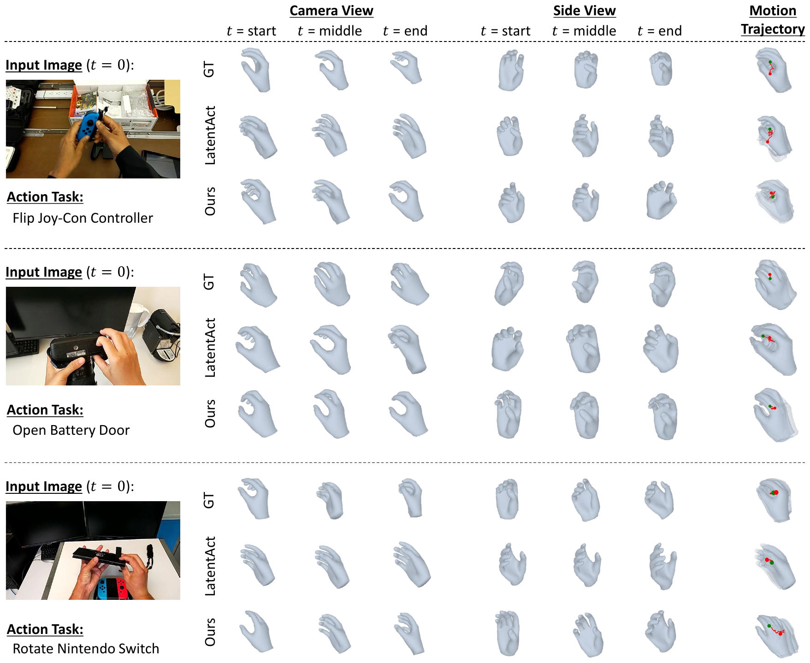

CoherentHand: Temporally Consistent 3D Hand Trajectory Synthesis with Semantic Motion Priors
1University of Illinois Urbana-Champaign · 2Korea University
†Corresponding authors

Abstract
Understanding 3D hand motion from visual and linguistic cues is crucial for modeling Human–Object Interaction (HOI). Current state-of-the-art 3D HOI generation frameworks suffer from two key limitations: (1) methods for learning hand-motion priors fail to capture subtle, object-specific finger articulation, and (2) discretized motion generators produce jerky, physically implausible motion trajectories. We introduce CoherentHand, a unified and object-model-free framework that addresses these limitations to achieve robust and fluid 3D hand trajectory estimation. Our approach introduces two key innovations. First, we propose a VLM-guided Residual Vector-Quantized (RVQ) codebook that leverages intermediate Vision-Language Model representations to infuse high-level affordance and articulation cues directly into the motion priors, ensuring fine-grained semantic alignment with the visual context. Second, we employ a flow-based decoder conditioned on this enriched codebook to generate continuous 3D hand pose sequences, thereby overcoming the temporal noise artifacts inherent in discrete token prediction. Evaluated across challenging forecasting and interpolation tasks on the HoloAssist and ARCTIC datasets, CoherentHand establishes new state-of-the-art performance across four generalization settings, demonstrating high fidelity in terms of finger articulation and trajectory fluency.
Method
CoherentHand predicts a continuous, semantically grounded 3D hand trajectory from a single object image, an action prompt, and an initial 3D contact point, in two complementary stages.

VLM-guided discrete representation
We learn a residual vector-quantized codebook with L = 6 quantizers and K = 512 entries of dimension E = 512. A single-head cross-attention module uses VLM features as queries and the codebook / video / action / contact features as keys/values, so the VLM's high-level semantics act as a selective filter over the input modalities during reconstruction.
Flow-based decoder
A conditional Rectified Flow decoder learns a straight-line velocity field from a Gaussian prior to the ground-truth trajectory. Conditioning is built from the codebook latent and the input modalities, then enriched with two VLM latent streams (hand-articulation and hand–object contact) via dedicated cross-attention modules.
Video Examples
Predicted 3D hand trajectories across different generalization settings. Use the arrows or the dots below to switch between examples.
Results
CoherentHand achieves new state-of-the-art across all four generalization splits of HoloAssist (task / object / action / scene), under both forecasting and interpolation, with or without the hand visible in the input.
HoloAssist — task-level generalization (cm, lower is better)
| Method | Forecast MPJPE↓ | Forecast MPJPE-PA↓ | Interp. MPJPE↓ | Interp. MPJPE-PA↓ |
|---|---|---|---|---|
| HCTFormer | 8.32 | 3.06 | 7.52 | 3.02 |
| HCTDiff | 8.42 | 2.75 | 8.30 | 2.72 |
| LatentAct | 7.61 | 2.99 | 6.72 | 2.87 |
| CoherentHand (ours) | 6.76 | 2.72 | 5.91 | 2.61 |
Hand-visible setting, task-level split. See the paper for the full hand-visible × no-hand × four-split breakdown.
Cross-dataset generalization on ARCTIC
| Method | MPJPE↓ | MPJPE-PA↓ | MPJPE-FA↓ |
|---|---|---|---|
| HCTFormer | 15.76 | 3.61 | — |
| LatentAct | 14.77 | 3.76 | 18.75 |
| CoherentHand (ours) | 11.77 | 3.63 | 15.52 |
Qualitative results

BibTeX
@InProceedings{Boote_2026_CVPR,
author = {Boote, Bikram and Kim, Junho and Kara, Ozgur and Lee, Sangmin and Rehg, James M.},
title = {CoherentHand: Temporally Consistent 3D Hand Trajectory Synthesis with Semantic Motion Priors},
booktitle = {Proceedings of the IEEE/CVF Conference on Computer Vision and Pattern Recognition (CVPR) Findings},
month = {June},
year = {2026}
}
Acknowledgments
This work was supported in part by the NRF grant funded by the Korean government (MSIT) (RS-2025-00563942) and the IITP grant funded by the Korean government (MSIT) (IITP-2026-RS-2020-II201819, 10%).